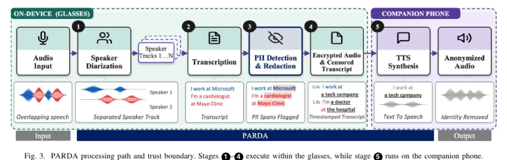
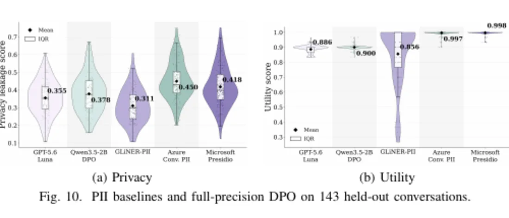

PARDA
Conversation-aware privacy redaction and speaker voice replacement for smart glasses.
Documents


Problem
Smart glasses can reveal bystander identity and private attributes inferred across conversation turns. Local processing must protect that information while retaining useful conversation content.
Work
- Extended SEAL-style redaction, an adversarial sensitive-content anonymisation method, from static text to multi-speaker conversation with retrieval and persistent context.
- Distilled an adversary and anonymizer workflow into a 2B model using 717 CANDOR conversations.
- Evaluated quantized components on Raspberry Pi 5.
Result
- On 143 held-out conversations, model-judged leakage fell from 0.502 to 0.378 while utility rose from 0.875 to 0.900.
- First-author manuscript submitted to IEEE PerCom 2027.